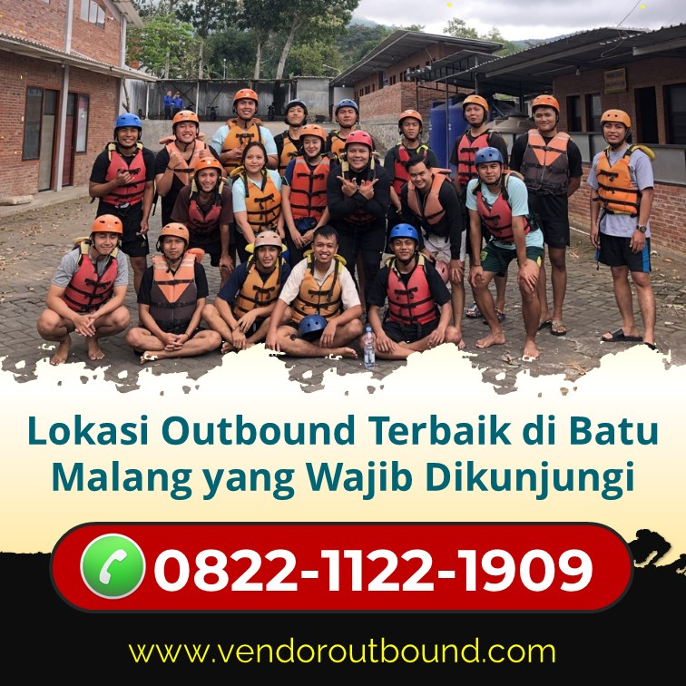

5 Destinasi Outbound Terbaik di Jawa Barat
Temukan lokasi outbound spektakuler yang cocok untuk program team building perusahaan Anda.
Baca SelengkapnyaRiset dari Harvard Business Review menunjukkan bahwa tim yang berpartisipasi dalam kegiatan outdoor bersama mengalami peningkatan produktivitas hingga 25% dan berkurangnya konflik interpersonal sebesar 40%. Outbound bukan sekadar liburan — ini investasi strategis untuk bisnis Anda!

Pelatihan konvensional di ruangan sering kali tidak mampu menciptakan perubahan perilaku yang nyata dan berkelanjutan. Otak manusia belajar lebih efektif melalui experiential learning — belajar melalui pengalaman langsung, bukan hanya mendengarkan teori.
"Tell me and I forget. Teach me and I remember. Involve me and I learn." — Pembelajaran yang melibatkan pengalaman nyata 4x lebih efektif dari pembelajaran pasif.
— Benjamin Franklin, dikutip dalam Educational Psychology Journal
Aktivitas seperti arung jeram dan trust fall memaksa anggota tim untuk benar-benar mempercayai satu sama lain. Kepercayaan yang dibangun di alam nyata jauh lebih kuat dari yang dibangun di ruang meeting.
Di tengah sungai berarus, komunikasi yang jelas dan cepat adalah keharusan. Skill komunikasi yang dilatih dalam kondisi nyata ini secara otomatis terbawa ke lingkungan kerja.
Outbound sering mengungkap pemimpin alami yang tidak terlihat dalam setting kantor biasa. Lingkungan yang berbeda memunculkan karakter yang berbeda — dan itulah aset tersembunyi tim Anda.
Menghadapi jeram yang menantang membutuhkan keputusan cepat dan tepat. Kemampuan ini sangat relevan dengan tantangan bisnis yang membutuhkan decision-making yang cepat dan efektif.
Kontak dengan alam terbukti secara ilmiah menurunkan kadar kortisol (hormon stres) dan meningkatkan produksi endorfin. Tim yang lebih bahagia adalah tim yang lebih produktif.

Outbound mencampurkan anggota dari berbagai divisi dalam satu tim yang sama. Ini menghancurkan "silo" antar departemen dan membangun hubungan yang akan meningkatkan kolaborasi di tempat kerja.
Tantangan-tantangan di alam terbuka membutuhkan solusi kreatif yang tidak ada dalam buku teks. Pola pikir kreatif ini sangat berharga untuk inovasi dalam bisnis.
Berhasil melewati tantangan alam memberikan rasa pencapaian yang kuat dan membangun keyakinan bahwa tim mampu mengatasi tantangan apapun — termasuk tantangan bisnis.
Shared experiences yang intense menciptakan kenangan bersama yang kuat — fondasi dari identitas tim yang solid dan kohesif dalam jangka panjang.
Karyawan yang merasa dihargai dan memiliki ikatan kuat dengan rekan kerjanya cenderung bertahan lebih lama. Investasi outbound dapat mengurangi biaya rekrutmen yang sangat mahal.
"Kami mengadakan outbound untuk 80 karyawan dari 5 departemen yang berbeda. Hasilnya luar biasa — 3 bulan kemudian, survey kepuasan karyawan naik 34%, dan produktivitas tim melonjak signifikan. ROI dari kegiatan ini jauh melebihi ekspektasi."
— Direktur HR, PT. Maju Bersama (900 karyawan)
Jumlah ideal adalah 20–100 peserta per sesi untuk efektivitas maksimal. Lebih dari itu, grup dibagi menjadi sub-tim. Kami telah menangani grup hingga 500 orang dengan manajemen yang terstruktur.
Biaya sangat bervariasi tergantung jumlah peserta, durasi, aktivitas, dan fasilitas yang dipilih. Berkisar Rp 300.000–1.500.000 per orang untuk paket half-day hingga full-day dengan berbagai aktivitas.
Tentu! Kami menyediakan layanan konsultasi gratis untuk merancang program outbound yang sepenuhnya disesuaikan dengan budaya perusahaan, tujuan HR, dan kondisi fisik peserta Anda.
Idealnya minimum 1–2 kali per tahun untuk menjaga momentum dan memperbarui ikatan antar anggota tim. Banyak perusahaan kini mengintegrasikannya dalam agenda kuartalan mereka.
Outbound bukan sekadar "jalan-jalan" — ini adalah investasi strategis dalam modal manusia yang menghasilkan return nyata dalam bentuk kekompakan tim, peningkatan produktivitas, dan loyalitas karyawan yang lebih tinggi.
Perusahaan yang menginvestasikan dalam pengembangan tim melalui outbound mengalami pertumbuhan bisnis rata-rata 2x lebih cepat dibanding yang tidak. Jadikan outbound sebagai bagian dari strategi HR Anda.
Kami adalah spesialis program outbound korporat dengan pengalaman menangani lebih dari 500 perusahaan. Konsultasikan kebutuhan tim Anda — GRATIS!
Konsultasi Program Tim Gratis